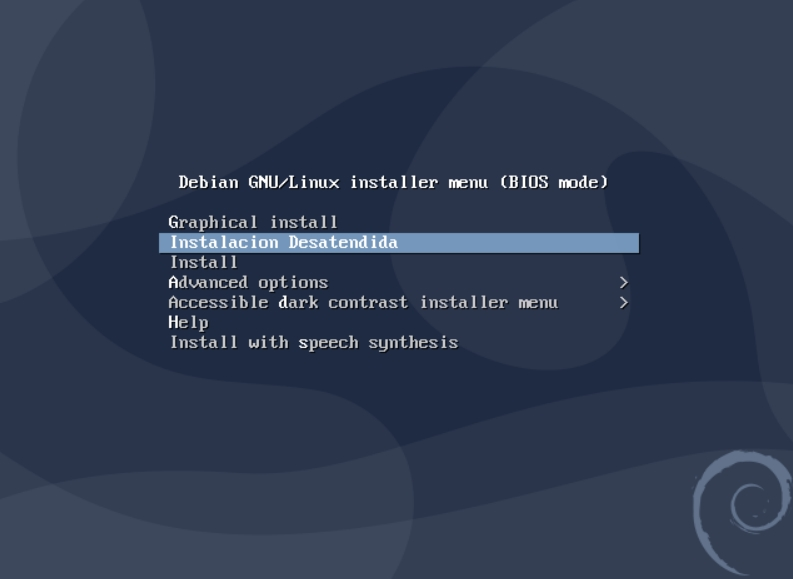
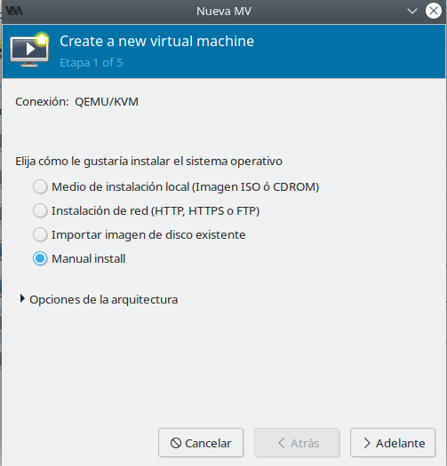
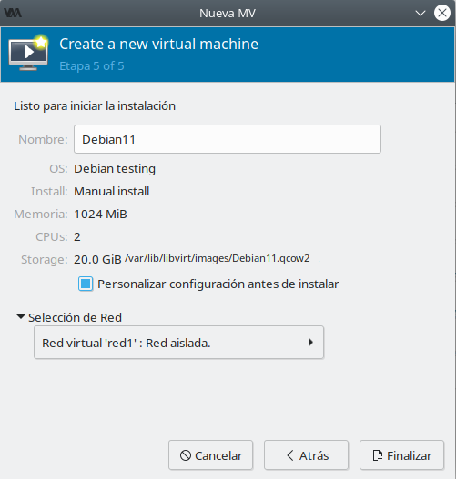
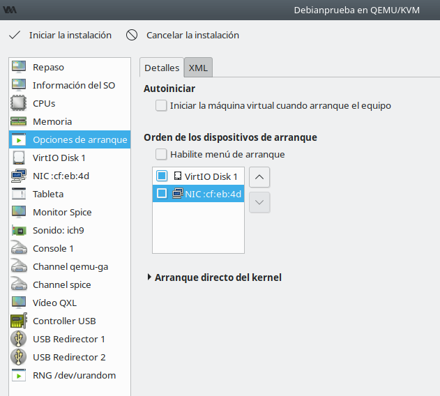
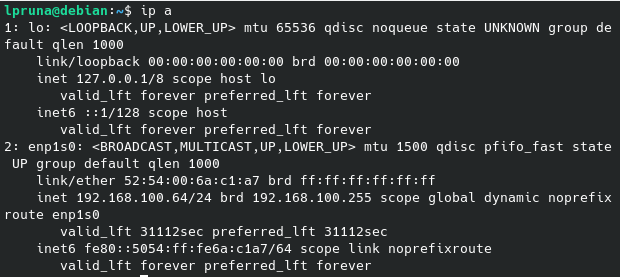
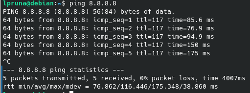

En este artículo veremos cómo podemos instalar Debian 11 de una manera totalmente automatizada, sin que tengamos que interactuar con el sistema durante el proceso.
 Vamos, que podremos dedicar el tiempo a otra cosa.
Vamos, que podremos dedicar el tiempo a otra cosa.
Configuración del fichero preseed
Lo primero que haremos es crear el fichero preseed.cfg, y añadimos la configuración dependiendo de nuestras necesidades:
#Indicamos el idioma de la instalación y del teclado
d-i debian-installer/locale string es_ES
d-i debian-installer/language string spanish
d-i debian-installer/country string Spain
d-i debian-installer/locale string es_ES.UTF-8
d-i localechooser/supported-locales es_ES.UTF-8
d-i keyboard-configuration/toggle select No toggling
d-i keyboard-configuration/xkb-keymap select es
d-i console-setup/ask_detect boolean true
d-i keyboard-configuration/modelcode string pc105
d-i keyboard-configuration/layoutcode string es
#Si hay más de una interfaz, se elegirá de manera automática
d-i netcfg/choose_interface select auto
#Aquí le damos un nombre del host y escogemos un dominio
#(yo lo he dejado en blanco porque no tengo dominio)
d-i netcfg/get_hostname string debian
d-i netcfg/get_domain string
d-i hw-detect/load_firmware boolean false
d-i apt-setup/cdrom/set-first boolean false
d-i apt-setup/cdrom/set-next boolean false
d-i apt-setup/cdrom/set-failed boolean false
# Elegimos el repositorio de Debian manualmente, y deshabilitamos la participación en la encuesta
d-i mirror/country string manual
d-i mirror/http/hostname string ftp.es.debian.org
d-i mirror/http/directory string /debian
d-i mirror/http/proxy string
popularity-contest popularity-contest/participate boolean false
# Seleccionamos la zona horaria
d-i clock-setup/utc boolean true
d-i time/zone string ES/Madrid
d-i clock-setup/ntp boolean true
# En la configuración de las particiones, he optado por coger el espacio libre más grande
# y crear una única partición primaria, pero también se podría optar por crear particiones en LVM.
d-i partman-auto/init_automatically_partition select biggest_free
d-i partman-auto/method string regular
d-i partman-auto/choose_recipe select atomic
d-i partman-partitioning/confirm_write_new_label boolean true
d-i partman/choose_partition select finish
d-i partman/confirm boolean true
d-i partman/confirm_nooverwrite boolean true
d-i partman-md/confirm boolean true
d-i partman-partitioning/confirm_write_new_label boolean true
d-i partman/choose_partition select finish
d-i partman/confirm boolean true
d-i partman/confirm_nooverwrite boolean true
# En este apartado he descartado la creación de un superusuario.
# Escribimos el nombre y la contraseña del usuario.
# Esta ultima la he insertado de manera encriptada,
# (podemos ejecutar previamente el comando passwd
# con la contraseña para obtener la encriptación).
d-i passwd/user-fullname string Lara Pruna
d-i passwd/username string lpruna
d-i passwd/root-login boolean false
d-i passwd/user-password-crypted password $y$j9T$3IDOsh0jfa5jIKABp0GS41$OURF2BOwg33zn3>
d-i user-setup/encrypt-home boolean false
# Aquí elegimos los paquetes que queramos instalar, como el entorno gráfico.
tasksel tasksel/first multiselect openssh-server, kde-desktop
# Instalamos el grub
d-i grub-installer/only_debian boolean true
d-i grub-installer/with_other_os boolean true
d-i grub-installer/bootdev string default
# Con la siguiente línea, indicamos que reinicie al finalizar la instalación
d-i finish-install/reboot_in_progress note
xserver-xorg xserver-xorg/autodetect_monitor boolean true
xserver-xorg xserver-xorg/config/monitor/selection-method \
select medium
xserver-xorg xserver-xorg/config/monitor/mode-list \
select 1024×768 @ 60 Hz
Incrustación del preseed en el fichero iso
Creamos un directorio en /mnt y montamos la iso que hayamos descargado en dicha carpeta:
mkdir /mnt/iso
mount -o loop debian-10.9.0-amd64-netinst.iso /mnt/iso
Ahora podemos ver todo el contenido de la iso, del cual solo necesitaremos 5 ficheros y directorios. Creamos un enlace simbólico a estos en un directorio aparte:
mkdir iso-preseed
cd iso-preseed
cp -pr /mnt/iso/install.amd install.amd
cp -pr /mnt/iso/dists dists
cp -pr /mnt/iso/pool pool
cp -pr /mnt/iso/.disk .disk
cp -pr /mnt/iso/isolinux isolinux
ln -s .debian
Entramos en la carpeta isolinux, editamos el fichero txt.cgf y añadimos el siguiente texto:
default install
label install
menu label ^Install
kernel /install.amd/vmlinuz
append vga=788 initrd=/install.amd/initrd.gz -- quiet
label unattended-gnome
menu label ^Instalacion desatendida de Debian
kernel /install.amd/gtk/vmlinuz
append vga=788 initrd=/install.amd/gtk/initrd.gz preseed/file=/cdrom/respuestas/preseed.cfg locale=es_ES console-setup/ask_detect=false keyboard-configuration/xkb-keymap=es --
Al realizar cambios en el directorio isolinux, hay que regenerar el archivo md5sum (fichero que comprueba la integridad de ficheros y detecta si se ha realizado algún cambio):
md5sum `find ! -name "md5sum.txt" ! -path "./isolinux/*" -follow -type f` > md5sum.txt
Por último, creamos la iso con el preseed incrustado:
genisoimage -o cd-preseed.iso -l -r -J -no-emul-boot -boot-load-size 4 -boot-info-table -b isolinux/isolinux.bin -c isolinux/boot.cat iso-preseed
 ¡Id preparando las palomitas!
¡Id preparando las palomitas!
Ya solo nos queda entrar en el instalador de Debian y, en lugar de pulsar "Install", seleccionamos "Instalacion desatendida de Debian" (que es la etiqueta que le hemos puesto en el fichero txt.cfg).

Instalación con arranque por red (PXE/TFTP)
Creamos una máquina de vagrant, donde alojaremos el servidor DHCP.
mkdir servidorDHCP
cd servidorDHCP
vagrant init
nano Vagrantfile
El contenido del fichero Vagrantfile será el siguiente:
Vagrant.configure("2") do |config|
config.vm.box = "debian/bullseye64" #Seleccionamos el box que vamos a utilizar, yo he elegido Debian 11 (Bullseye)
config.vm.hostname = "servidorDHCP" #Le ponemos un nombre a la máquina.
config.vm.network :private_network, #Como la máquina será un servidor DHCP, creamos una interfaz de red aislada, con una dirección IP estática
:libvirt__network_name => "red1", #Le damos un nombre a la nueva red que creará Vagrant
:libvirt__dhcp_enabled => false, #Desactivamos el direccionamiento dinámico
:ip => "192.168.100.5",
:libvirt__forward_mode => "none" #Aquí indicamos que la red será aislada
end
Iniciamos el servidor y entramos por ssh:
vagrant up
vagrant ssh
Con el comando ip a comprobamos que tenemos dos interfaces en el servidor:
* eth0: conectada por NAT a un router virtual, y con el que accedemos al exterior.
* eth1: red interna a la que se conectará la nueva máquina virtual en la instalaremos Debian por red.
1: lo: <LOOPBACK,UP,LOWER_UP> mtu 65536 qdisc noqueue state UNKNOWN group default qlen
link/loopback 00:00:00:00:00:00 brd 00:00:00:00:00:00
inet 127.0.0.1/8 scope host lo
valid_lft forever preferred_lft forever
inet6 ::1/128 scope host
valid_lft forever preferred_lft forever
2: eth0: <BROADCAST,MULTICAST,UP,LOWER_UP> mtu 1500 qdisc pfifo_fast state UP group def
link/ether 52:54:00:f8:fd:75 brd ff:ff:ff:ff:ff:ff
altname enp0s5
altname ens5
inet 192.168.121.237/24 brd 192.168.121.255 scope global dynamic eth0
valid_lft 2873sec preferred_lft 2873sec
inet6 fe80::5054:ff:fef8:fd75/64 scope link
valid_lft forever preferred_lft forever
3: eth1: <BROADCAST,MULTICAST,UP,LOWER_UP> mtu 1500 qdisc pfifo_fast state UP group def
link/ether 52:54:00:35:d6:49 brd ff:ff:ff:ff:ff:ff
altname enp0s6
altname ens6
inet 192.168.100.5/24 brd 192.168.100.255 scope global eth1
valid_lft forever preferred_lft forever
inet6 fe80::5054:ff:fe35:d649/64 scope link
valid_lft forever preferred_lft forever
Actualizamos el sistema e instalamos el paquete dnsmasq, con la que crearemos el servicio DHCP y TFTP:
sudo su
apt update -y && apt upgrade -y && apt install -y dnsmasq
Modificamos el fichero de configuración /etc/dnsmasq y añadimos el siguiente contenido:
#Activamos el servidor DHCP y establecemos el rango de direcciones que puede conceder,
#la máscara de red y la duración de dichas concesiones.
dhcp-range=192.168.100.50,192.168.100.150,255.255.255.0,12h
#Establecemos el fichero que los clientes van a usar para arrancar a través de la red.
dhcp-boot=pxelinux.0
#Habilitamos el servidor TFTP.
enable-tftp
#Especificamos el directorio que contendrá los ficheros que se van a servir por TFTP.
tftp-root=/srv/tftp
Creamos el directorio /srv/tftp, que aún no existe, y reiniciamos el servicio de dnsmasq:
mkdir /srv/tftp
systemctl restart dnsmasq
Comprobamos que el servicio dnsmasq está activado:
systemctl status dnsmasq
El resultado será el siguiente:
● dnsmasq.service - dnsmasq - A lightweight DHCP and caching DNS server
Loaded: loaded (/lib/systemd/system/dnsmasq.service; enabled; vendor preset: enab>
Active: active (running) since Sat 2021-10-02 09:27:34 UTC; 3h 26min ago
Main PID: 7220 (dnsmasq)
Tasks: 1 (limit: 528)
Memory: 760.0K
CPU: 1.493s
CGroup: /system.slice/dnsmasq.service
└─7220 /usr/sbin/dnsmasq -x /run/dnsmasq/dnsmasq.pid -u dnsmasq -7 /etc/d>
Oct 02 11:34:31 servidorDHCP dnsmasq-dhcp[7220]: DHCPDISCOVER(eth1) 52:54:00:6a:c1:a7
Oct 02 11:34:31 servidorDHCP dnsmasq-dhcp[7220]: DHCPOFFER(eth1) 192.168.100.64 52:54:>
Oct 02 11:34:31 servidorDHCP dnsmasq-dhcp[7220]: DHCPREQUEST(eth1) 192.168.100.64 52:5>
Oct 02 11:34:31 servidorDHCP dnsmasq-dhcp[7220]: DHCPACK(eth1) 192.168.100.64 52:54:00>
Oct 02 11:58:22 servidorDHCP dnsmasq[7220]: reading /etc/resolv.conf
Oct 02 11:58:22 servidorDHCP dnsmasq[7220]: using nameserver 192.168.121.1#53
Oct 02 12:21:01 servidorDHCP dnsmasq[7220]: reading /etc/resolv.conf
Oct 02 12:21:01 servidorDHCP dnsmasq[7220]: using nameserver 192.168.121.1#53
Oct 02 12:46:26 servidorDHCP dnsmasq[7220]: reading /etc/resolv.conf
Oct 02 12:46:26 servidorDHCP dnsmasq[7220]: using nameserver 192.168.121.1#53
Nos dirigimos al directorio /srv/tftp/ y descargamos ahí el archivo comprimido que necesitamos para instalar Debian por red:
cd /srv/tftp
wget http://ftp.debian.org/debian/dists/bullseye/main/installer-amd64/current/images/netboot/netboot.tar.gz
Lo descomprimimos y eliminamos el archivo comprimido, ya que no volveremos a necesitarlo:
tar -zxf netboot.tar.gz && rm netboot.tar.gz
Ahora creamos la máquina virtual en el Gestor de Máquinas Virtuales en modo manual, le asignamos la red aislada que hemos creado con Vagrant y marcamos la opción de personalizar la configuración antes de instalar:
 
En la configuración, nos vamos a la pestaña "Opciones de arranque", marcamos el arranque por red e iniciamos la instalación: 
Veremos que la máquina arranca el instalador de Debian. Solo falta agregar el fichero preseed para que la instalación se realice de manera desatendida. Instalamos apache2 en el servidor y creamos el fichero preseed.txt, donde añadimos la preconfiguración que describimos antes.
apt install apache2
nano /var/www/html/preseed.txt
Activamos el bit de forward para que los paquetes puedan pasar de una interfaz a otra:
echo 1 > /proc/sys/net/ipv4/ip_forward
Con el comando iptables, el servidor hará SNAT, con lo que la máquina virtual podrá instalar paquetes por red:
iptables -t nat -A POSTROUTING -o eth0 -j SNAT --to-source 192.168.121.237
Finalmente, en el instalador de Debian, entramos en las opciones avanzadas y seleccionamos la instalación automatizada. Nos pedirá una URL de la que descargar el preseed, y ahí pondremos la ip de eth1 del servidor y el fichero preseed:
192.168.100.5/preseed.txt
Como alternativa, podemos simplemente pulsar ESC y escribir en la terminal:
auto url=192.168.100.5/preseed.txt
Al finalizar la instalación, entramos en la terminal de la nueva máquina virtual, comprobamos que ha recibido una IP del servidor:

Si hacemos ping a 8.8.8.8, veremos que también tiene conexión a Internet: 